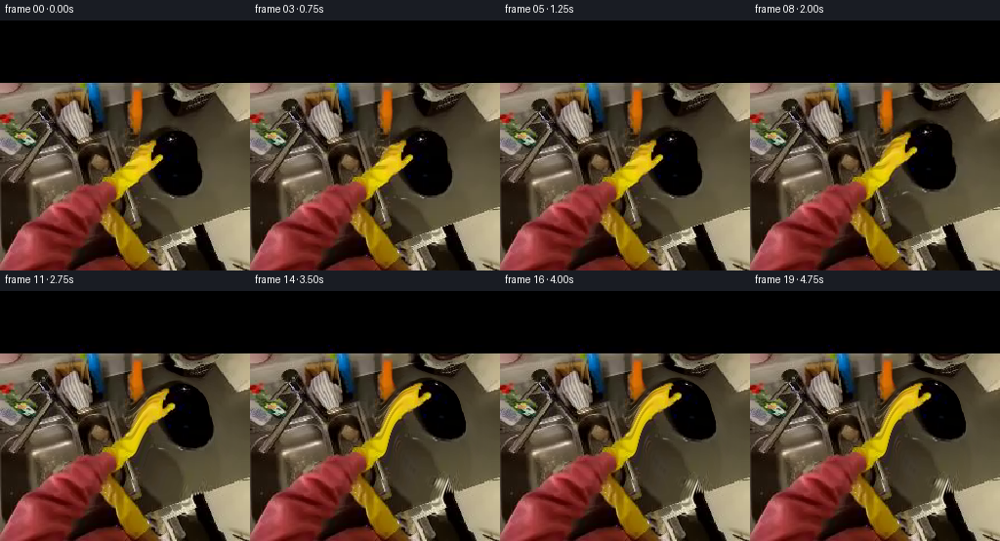
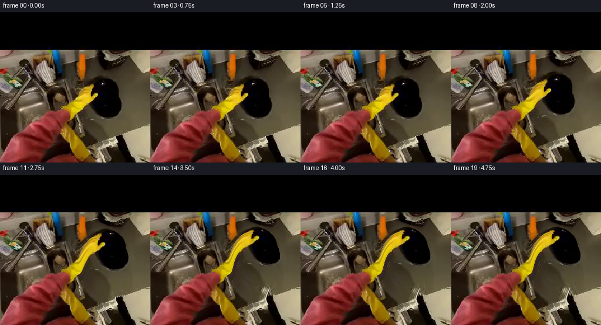
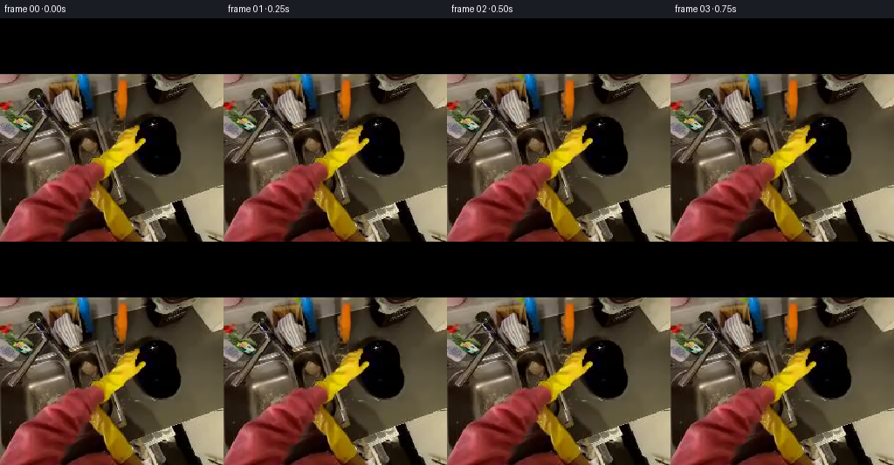

CODING AGENTS AS PIXEL WORLD MODELS
traex/DeepSeek-V4.1-Flash · common50_0024
点击播放 · 原生 RGB 像素
逐轮保存的候选
回放视频、检查图与代码变化。
每份候选均可单独播放。实际图片检查记录在下方工具轨迹中。
候选 01播放与检查图
点击播放 · 原生 RGB 像素

展开代码变化
--- 上一保存版本
+++ 本次保存版本
@@ -0,0 +1,205 @@
+"""Generate a short first-person plate-lift animation from the supplied frame."""
+
+from pathlib import Path
+
+import cv2
+import numpy as np
+from PIL import Image
+
+import artifact_io
+
+
+WIDTH = 256
+HEIGHT = 256
+FRAME_COUNT = 20
+FPS = 4
+CASE_DIR = Path(__file__).resolve().parent
+
+
+def smoothstep(value):
+ value = np.clip(value, 0.0, 1.0)
+ return value * value * (3.0 - 2.0 * value)
+
+
+def eased_interval(frame, start, end):
+ return smoothstep((frame - start) / max(1.0, end - start))
+
+
+def elliptical_weight(center, axes, softness, angle=0.0):
+ yy, xx = np.mgrid[0:HEIGHT, 0:WIDTH].astype(np.float32)
+ dx = xx - center[0]
+ dy = yy - center[1]
+ theta = np.deg2rad(angle)
+ ct, st = np.cos(theta), np.sin(theta)
+ xr = ct * dx + st * dy
+ yr = -st * dx + ct * dy
+ radius = np.sqrt((xr / axes[0]) ** 2 + (yr / axes[1]) ** 2)
+ return smoothstep((1.0 + softness - radius) / softness)
+
+
+def yellow_hand_weight(frame):
+ hsv = cv2.cvtColor(frame, cv2.COLOR_RGB2HSV)
+ hue, saturation, value = cv2.split(hsv)
+ yellow = (
+ (hue >= 14)
+ & (hue <= 48)
+ & (saturation >= 68)
+ & (value >= 58)
+ ).astype(np.uint8)
+
+ # Keep the two large glove lobes in the center while excluding yellow
+ # background objects at the image borders.
+ count, labels, stats, centroids = cv2.connectedComponentsWithStats(yellow, 8)
+ glove = np.zeros_like(yellow)
+ for index in range(1, count):
+ x, y, w, h, area = stats[index]
+ cx, cy = centroids[index]
+ if area >= 90 and 88 <= cx <= 178 and 112 <= cy <= 258:
+ glove[labels == index] = 255
+
+ glove = cv2.morphologyEx(
+ glove, cv2.MORPH_CLOSE, np.ones((9, 9), np.uint8), iterations=2
+ )
+ glove = cv2.morphologyEx(
+ glove, cv2.MORPH_OPEN, np.ones((3, 3), np.uint8), iterations=1
+ )
+ glove = cv2.GaussianBlur(glove.astype(np.float32) / 255.0, (0, 0), 4.0)
+ glove = np.clip((glove - 0.035) / 0.72, 0.0, 1.0)
+
+ # The wrist must stay attached to the bottom of the frame.
+ vertical_anchor = np.clip((236.0 - np.arange(HEIGHT)) / 36.0, 0.0, 1.0)
+ glove *= vertical_anchor[:, None]
+ return glove.astype(np.float32)
+
+
+def motion_for_frame(frame, hand_weight):
+ if frame == 0:
+ return np.zeros((HEIGHT, WIDTH, 2), np.float32)
+
+ reach = eased_interval(frame, 1, 6)
+ lift = eased_interval(frame, 5, 15)
+ settle = eased_interval(frame, 15, 19)
+ lifted = lift * (1.0 - 0.035 * settle)
+ weight_shift = 1.15 * np.sin(np.pi * np.clip((frame - 14) / 5.0, 0.0, 1.0))
+
+ plate_center = np.array([184.0, 144.0], np.float32)
+ plate_shift = np.array(
+ [19.5 * lifted, -31.0 * lifted + weight_shift], np.float32
+ )
+ plate_angle = np.deg2rad(7.5 * lifted + 1.2 * reach * (1.0 - lifted))
+ plate_scale = 1.0 + 0.075 * lifted
+
+ plate_weight = elliptical_weight(
+ plate_center, (31.0, 43.0), 0.70, angle=-10.0
+ )
+ plate_weight *= np.clip(lifted * 3.0 + reach * 0.35, 0.0, 1.0)
+
+ # The glove's upper half follows the plate; its wrist stays anchored.
+ hand_shift = np.array(
+ [16.0 * lifted + 2.0 * reach * (1.0 - lifted),
+ -28.0 * lifted - 2.0 * reach * (1.0 - lifted) + 0.55 * weight_shift],
+ np.float32,
+ )
+ hand_angle = np.deg2rad(-4.5 * lifted + 2.0 * reach * (1.0 - lifted))
+
+ yy, xx = np.mgrid[0:HEIGHT, 0:WIDTH].astype(np.float32)
+ source = np.stack([xx, yy], axis=-1)
+
+ # Destination-to-source affine sampling for the plate.
+ dest_center = plate_center + plate_shift
+ qx = xx - dest_center[0]
+ qy = yy - dest_center[1]
+ ct, st = np.cos(-plate_angle), np.sin(-plate_angle)
+ plate_src = np.stack(
+ [
+ plate_center[0] + (ct * qx - st * qy) / plate_scale,
+ plate_center[1] + (st * qx + ct * qy) / plate_scale,
+ ],
+ axis=-1,
+ )
+
+ # The hand rotates around a point below the glove so its base does not
+ # visibly peel away from the wrist.
+ hand_pivot = np.array([132.0, 238.0], np.float32)
+ qx = xx - hand_pivot[0]
+ qy = yy - hand_pivot[1]
+ ct, st = np.cos(-hand_angle), np.sin(-hand_angle)
+ hand_src = np.stack(
+ [
+ hand_pivot[0] + ct * qx - st * qy - hand_shift[0],
+ hand_pivot[1] + st * qx + ct * qy - hand_shift[1],
+ ],
+ axis=-1,
+ )
+
+ # Plate pixels take precedence where the glove grips its edge.
+ hand_weight = hand_weight * np.clip(0.94 - plate_weight, 0.0, 1.0)
+ total = plate_weight + hand_weight
+ scale = np.minimum(1.0, 1.0 / np.maximum(total, 1e-5))
+ plate_weight *= scale
+ hand_weight *= scale
+
+ source = (
+ source * (1.0 - plate_weight - hand_weight)[..., None]
+ + plate_src * plate_weight[..., None]
+ + hand_src * hand_weight[..., None]
+ )
+ return source.astype(np.float32)
+
+
+def add_lift_lighting(frame, frame_index, lift):
+ """Add a restrained contact shadow and a little reflected fill."""
+ image = frame.astype(np.float32)
+ yy, xx = np.mgrid[0:HEIGHT, 0:WIDTH].astype(np.float32)
+
+ # A soft shadow stays on the table beneath the original plate position.
+ cx, cy = 186.0 + 9.0 * lift, 151.0 + 4.0 * lift
+ sx, sy = 33.0 + 8.0 * lift, 17.0 + 5.0 * lift
+ shadow = np.exp(
+ -0.5 * (((xx - cx) / sx) ** 2 + ((yy - cy) / sy) ** 2)
+ )
+ shadow *= 0.16 * lift
+ image *= (1.0 - shadow[..., None])
+
+ # A very small warm bounce on the plate's lower edge sells the lift.
+ edge_y = 168.0 - 29.0 * lift
+ edge_x = 197.0 + 18.0 * lift
+ bounce = np.exp(
+ -0.5
+ * (
+ ((xx - edge_x) / (15.0 + 2.0 * lift)) ** 2
+ + ((yy - edge_y) / 5.0) ** 2
+ )
+ )
+ bounce *= 0.055 * lift
+ image += bounce[..., None] * np.array([16.0, 10.0, 3.0], np.float32)
+ return np.clip(image, 0, 255).astype(np.uint8)
+
+
+def main():
+ first = np.asarray(Image.open(CASE_DIR / "first_frame.png").convert("RGB"))
+ if first.shape != (HEIGHT, WIDTH, 3):
+ raise ValueError(f"Unexpected first-frame shape: {first.shape}")
+
+ hand_weight = yellow_hand_weight(first)
+ frames = np.empty((FRAME_COUNT, HEIGHT, WIDTH, 3), np.uint8)
+ frames[0] = first
+
+ for index in range(1, FRAME_COUNT):
+ lift = eased_interval(index, 4, 16)
+ source = motion_for_frame(index, hand_weight)
+ warped = cv2.remap(
+ first,
+ source[..., 0],
+ source[..., 1],
+ interpolation=cv2.INTER_CUBIC,
+ borderMode=cv2.BORDER_REFLECT_101,
+ )
+ frames[index] = add_lift_lighting(warped, index, lift)
+
+ artifact_io.save(frames, CASE_DIR)
+ print(f"Wrote {FRAME_COUNT} frames to {CASE_DIR}")
+
+
+if __name__ == "__main__":
+ main()
候选 02播放与检查图
点击播放 · 原生 RGB 像素

展开代码变化
--- 上一保存版本
+++ 本次保存版本
@@ -54,7 +54,10 @@
for index in range(1, count):
x, y, w, h, area = stats[index]
cx, cy = centroids[index]
- if area >= 90 and 88 <= cx <= 178 and 112 <= cy <= 258:
+ # The glove is the pair of lobes around x=130. A much larger yellow
+ # object at the right edge belongs to the background and must remain
+ # stationary.
+ if area >= 90 and 115 <= cx <= 160 and 125 <= cy <= 250:
glove[labels == index] = 255
glove = cv2.morphologyEx(
@@ -76,7 +79,7 @@
if frame == 0:
return np.zeros((HEIGHT, WIDTH, 2), np.float32)
- reach = eased_interval(frame, 1, 6)
+ reach = eased_interval(frame, 0, 6)
lift = eased_interval(frame, 5, 15)
settle = eased_interval(frame, 15, 19)
lifted = lift * (1.0 - 0.035 * settle)
@@ -198,6 +201,17 @@
frames[index] = add_lift_lighting(warped, index, lift)
artifact_io.save(frames, CASE_DIR)
+ writer = cv2.VideoWriter(
+ str(CASE_DIR / "video.mp4"),
+ cv2.VideoWriter_fourcc(*"mp4v"),
+ FPS,
+ (WIDTH, HEIGHT),
+ )
+ if not writer.isOpened():
+ raise RuntimeError("Could not open video.mp4 for writing")
+ for frame in frames:
+ writer.write(cv2.cvtColor(frame, cv2.COLOR_RGB2BGR))
+ writer.release()
print(f"Wrote {FRAME_COUNT} frames to {CASE_DIR}")
候选 03播放与检查图
点击播放 · 原生 RGB 像素

展开代码变化
代码未变化；重新保存了产物。
候选 04播放与检查图
点击播放 · 原生 RGB 像素


展开代码变化
--- 上一保存版本
+++ 本次保存版本
@@ -75,7 +75,29 @@
return glove.astype(np.float32)
-def motion_for_frame(frame, hand_weight):
+def black_plate_weight(frame):
+ hsv = cv2.cvtColor(frame, cv2.COLOR_RGB2HSV)
+ _, saturation, value = cv2.split(hsv)
+ dark = ((value < 48) & (saturation < 170)).astype(np.uint8)
+ dark[:100] = 0
+ dark[:, :145] = 0
+ dark[:, 218:] = 0
+ dark[190:] = 0
+ dark = cv2.morphologyEx(
+ dark, cv2.MORPH_CLOSE, np.ones((5, 5), np.uint8), iterations=2
+ )
+
+ count, labels, stats, _ = cv2.connectedComponentsWithStats(dark, 8)
+ if count <= 1:
+ raise ValueError("Could not locate the black plate")
+ index = 1 + int(np.argmax(stats[1:, cv2.CC_STAT_AREA]))
+ plate = (labels == index).astype(np.uint8) * 255
+ plate = cv2.dilate(plate, np.ones((3, 3), np.uint8), iterations=1)
+ plate = cv2.GaussianBlur(plate.astype(np.float32) / 255.0, (0, 0), 1.6)
+ return np.clip(plate * 1.18, 0.0, 1.0).astype(np.float32)
+
+
+def motion_for_frame(frame, hand_weight, plate_mask):
if frame == 0:
return np.zeros((HEIGHT, WIDTH, 2), np.float32)
@@ -92,10 +114,7 @@
plate_angle = np.deg2rad(7.5 * lifted + 1.2 * reach * (1.0 - lifted))
plate_scale = 1.0 + 0.075 * lifted
- plate_weight = elliptical_weight(
- plate_center, (31.0, 43.0), 0.70, angle=-10.0
- )
- plate_weight *= np.clip(lifted * 3.0 + reach * 0.35, 0.0, 1.0)
+ plate_weight = plate_mask * np.clip(lifted * 3.0 + reach * 0.35, 0.0, 1.0)
# The glove's upper half follows the plate; its wrist stays anchored.
hand_shift = np.array(
@@ -185,12 +204,13 @@
raise ValueError(f"Unexpected first-frame shape: {first.shape}")
hand_weight = yellow_hand_weight(first)
+ plate_mask = black_plate_weight(first)
frames = np.empty((FRAME_COUNT, HEIGHT, WIDTH, 3), np.uint8)
frames[0] = first
for index in range(1, FRAME_COUNT):
lift = eased_interval(index, 4, 16)
- source = motion_for_frame(index, hand_weight)
+ source = motion_for_frame(index, hand_weight, plate_mask)
warped = cv2.remap(
first,
source[..., 0],
候选 05播放与检查图
候选 06播放与检查图
点击播放 · 原生 RGB 像素

展开代码变化
--- 上一保存版本
+++ 本次保存版本
@@ -77,14 +77,15 @@
def black_plate_weight(frame):
hsv = cv2.cvtColor(frame, cv2.COLOR_RGB2HSV)
- _, saturation, value = cv2.split(hsv)
- dark = ((value < 48) & (saturation < 170)).astype(np.uint8)
+ hue, saturation, value = cv2.split(hsv)
+ yellow = (hue > 15) & (hue < 48) & (saturation > 70)
+ dark = ((value < 45) & ~yellow).astype(np.uint8)
dark[:100] = 0
dark[:, :145] = 0
dark[:, 218:] = 0
dark[190:] = 0
dark = cv2.morphologyEx(
- dark, cv2.MORPH_CLOSE, np.ones((5, 5), np.uint8), iterations=2
+ dark, cv2.MORPH_CLOSE, np.ones((5, 5), np.uint8), iterations=1
)
count, labels, stats, _ = cv2.connectedComponentsWithStats(dark, 8)
@@ -93,8 +94,8 @@
index = 1 + int(np.argmax(stats[1:, cv2.CC_STAT_AREA]))
plate = (labels == index).astype(np.uint8) * 255
plate = cv2.dilate(plate, np.ones((3, 3), np.uint8), iterations=1)
- plate = cv2.GaussianBlur(plate.astype(np.float32) / 255.0, (0, 0), 1.6)
- return np.clip(plate * 1.18, 0.0, 1.0).astype(np.float32)
+ plate = cv2.GaussianBlur(plate.astype(np.float32) / 255.0, (0, 0), 1.25)
+ return np.clip(plate * 1.22, 0.0, 1.0).astype(np.float32)
def motion_for_frame(frame, hand_weight, plate_mask):
候选 07播放与检查图
可观测工具轨迹
实际执行的命令与返回图片。
命令 1exit 0
/bin/bash -c "pwd && rg --files -g '"'!*.mp4'"' -g '"'!*.mov'"' | sed -n '1,120p'"
命令 2exit 0
/bin/bash -c "sed -n '1,240p' prompt.txt"
命令 3exit 0
/bin/bash -c "sed -n '1,280p' GENERATION_RULES.md"
命令 4exit 127
/bin/bash -c "ls -lah && file first_frame.png && python - <<'PY'
from PIL import Image
im=Image.open('first_frame.png')
print(im.size, im.mode)
PY"命令 5exit 0
/bin/bash -c "sed -n '1,260p' artifact_io.py"
命令 6exit 0
/bin/bash -c "python - <<'PY'
from PIL import Image
from collections import Counter
import numpy as np
im=Image.open('first_frame.png').convert('RGB')
a=np.array(im)
print('size', a.shape)
print('global mean/std', a.mean((0,1)), a.std((0,1)))
q=(a//32*32)
c=Counter(map(tuple,q.reshape(-1,3)))
for col,n in c.most_common(20): print(col, n, round(100*n/(256*256),2))
PY"命令 7exit 0
/bin/bash -c "cat task_spec.json && printf '\\n--- player ---\\n' && sed -n '1,220p' player_template.html"
命令 8exit 0
/bin/bash -c "python - <<'PY'
try:
import cv2; print('cv2',cv2.__version__)
except Exception as e: print('no cv2',e)
try:
import scipy; print('scipy',scipy.__version__)
except Exception as e: print('no scipy',e)
PY"命令 9exit 0
/bin/bash -c "python - <<'PY'
from PIL import Image
import numpy as np
im=np.array(Image.open('first_frame.png').convert('RGB'))
# edge/range diagnostics by 32px tile
for y in range(0,256,32):
row=[]
for x in range(0,256,32):
p=im[y:y+32,x:x+32]
row.append(f'{p.mean():5.1f}')
print(y, ' '.join(row))
# non-dark object bounds with rough saturation and darkness
mx=im.max(2); mn=im.min(2)
mask=(mx<100)&((mx-mn)>8)
ys,xs=np.where(mask)
print('dark sat bounds', xs.min(),xs.max(),ys.min(),ys.max())
# print coarse ascii based on lum categories
chars=' .:-=+*#%@'
for y in range(0,256,8):
s=''
for x in range(0,256,8):
v=im[y:y+8,x:x+8].mean()
s+=chars[min(9,int(v/25.6))]
print(s)
PY"命令 10exit 0
/bin/bash -c "python - <<'PY'
import cv2, numpy as np
from PIL import Image
a=np.array(Image.open('first_frame.png').convert('RGB'))
hsv=cv2.cvtColor(a,cv2.COLOR_RGB2HSV)
H,S,V=[hsv[:,:,i] for i in range(3)]
for name,m in {
'yellow':(H>15)&(H<42)&(S>90)&(V>80),
'yellow_bright':(H>15)&(H<45)&(S>80)&(V>130),
'black':(V<45)&(S<130),
'dark':(V<70),
'red':((H<10)|(H>170))&(S>100)&(V>60),
'green':(H>35)&(H<95)&(S>50),
'blue':(H>90)&(H<140)&(S>50),
'white':(S<45)&(V>140),
}.items():
m=m.astype(np.uint8)
n,lab,stats,cent=cv2.connectedComponentsWithStats(m,8)
comps=sorted([(int(s[4]), tuple(map(int,s[:4])), tuple(np.round(c,1))) for s,c in zip(stats[1:],cent[1:])], reverse=True)[:8]
print('\\n',name,'count',m.sum(),'bbox', (np.where(m)[1].min(),np.where(m)[0].min(),np.where(m)[1].max(),np.where(m)[0].max()) if m.any() else None)
for c in comps: print(' ',c)
# quantize into semantic categories and ascii 4px blocks dominant category
cat=np.zeros(a.shape[:2],np.uint8)
cat[(V<30)]=1
cat[(V>=30)&(V<65)]=2
cat[(V>=65)&(V<110)]=3
cat[(V>=110)&(V<170)]=4
cat[V>=170]=5
cat[(H>15)&(H<45)&(S>100)&(V>80)]=6
cat[(H<10|((H>170)))&(S>120)&(V>60)]=7
chars=' kbmdwYr'
# ascii based dominant in 8x8
from collections import Counter
for y in range(0,256,8):
s=''
for x in range(0,256,8):
c=Counter(cat[y:y+8,x:x+8].ravel()).most_common(1)[0][0]
s+=chars[c]
print(s)
PY"命令 11exit 0
/bin/bash -c "python - <<'PY'
from PIL import Image
im=Image.open('first_frame.png')
# nearest-neighbor 4x for geometry inspection; permitted local artifact
im.resize((1024,1024),Image.Resampling.NEAREST).save('.tmp/first_x4.png')
PY"命令 12exit 0
/bin/bash -c "python - <<'PY'
import cv2, numpy as np
from PIL import Image
a=np.array(Image.open('first_frame.png').convert('RGB'))
hsv=cv2.cvtColor(a,cv2.COLOR_RGB2HSV); H,S,V=[hsv[:,:,i] for i in range(3)]
# list spans for darkest component bbox 169..198,120..170
for y in range(112,180,2):
m=(V[y]<50)&(S[y]<130)
# intervals
p=np.flatnonzero(m)
ints=[]
if len(p):
cuts=np.r_[0,np.flatnonzero(np.diff(p)>1)+1,len(p)]
ints=[(int(p[s]),int(p[e-1])) for s,e in zip(cuts[:-1],cuts[1:]) if p[e-1]-p[s]>=1]
print(f'y={y:3d}',ints)
print('samples')
for y,x in [(120,180),(130,180),(140,180),(150,180),(160,180),(170,180),(120,190),(140,190),(160,190),(140,175),(140,195),(145,185)]:
print((x,y),a[y,x], 'hsv',hsv[y,x])
# plate bbox per threshold around region
r=a[100:190,145:215]
print('region mean',r.mean((0,1)))
PY"命令 13exit 0
/bin/bash -c "python - <<'PY'
import cv2,numpy as np
from PIL import Image
a=np.array(Image.open('first_frame.png').convert('RGB'))
hsv=cv2.cvtColor(a,cv2.COLOR_RGB2HSV);H,S,V=[hsv[:,:,i] for i in range(3)]
# categories
cat=np.full((256,256),' ',dtype='<U1')
cat[(V<35)]='k';cat[(V>=35)&(V<75)]='d';cat[(V>=75)&(V<120)]='m';cat[(V>=120)&(V<175)]='l';cat[V>=175]='W'
cat[(S<40)&(V>=100)]='w'
cat[(H>=15)&(H<48)&(S>=80)&(V>=80)]='Y'
cat[((H<12)|(H>172))&(S>=120)&(V>=55)]='R'
cat[(H>=48)&(H<100)&(S>=55)&(V>=50)]='G'
cat[(H>=100)&(H<145)&(S>=55)&(V>=40)]='B'
cat[(H>=8)&(H<18)&(S>=70)&(V>=40)]='o'
# dominant symbol each 4x4, tie use center-ish weighted maybe first
for y in range(0,256,4):
s=''
for x in range(0,256,4):
c=cat[y:y+4,x:x+4].ravel()
vals,cnts=np.unique(c,return_counts=True)
s+=vals[cnts.argmax()]
print(f'{y:03d} '+s)
PY"命令 14exit 0
/bin/bash -c "python - <<'PY'
import cv2,numpy as np
from PIL import Image
a=np.array(Image.open('first_frame.png').convert('RGB'))
hsv=cv2.cvtColor(a,cv2.COLOR_RGB2HSV); H,S,V=[hsv[:,:,i] for i in range(3)]
roi=(slice(105,185),slice(145,220))
for name,m in [('v35',V<35),('v50',V<50),('v65',V<65),('dark_sat',(V<60)&(S<150))]:
x=m[roi].astype(np.uint8)
# fill small holes then comps
x2=cv2.morphologyEx(x,cv2.MORPH_CLOSE,np.ones((3,3),np.uint8))
n,lab,stats,cent=cv2.connectedComponentsWithStats(x2,8)
print(name)
for s in sorted(stats[1:],key=lambda z:-z[4])[:10]: print(tuple(map(int,s)))
# ascii roi threshold: # dark, + mid-dark, . other
for y in range(105,185,2):
s=''
for x in range(145,220,2):
v=V[y:y+2,x:x+2].mean()
s += '#' if v<30 else '+' if v<55 else ':' if v<90 else '.' if v<140 else ' '
print(f'{y:3d} '+s)
PY"命令 15exit 0
/bin/bash -c "python - <<'PY'
import cv2,numpy as np
from PIL import Image
a=np.array(Image.open('first_frame.png').convert('RGB'))
hsv=cv2.cvtColor(a,cv2.COLOR_RGB2HSV);H,S,V=[hsv[:,:,i] for i in range(3)]
for th in [25,40,55,70]:
print('TH',th)
for y in range(100,186,3):
m=V[y,135:225]<th
p=np.flatnonzero(m)
ints=[]
if len(p):
cuts=np.r_[0,np.flatnonzero(np.diff(p)>1)+1,len(p)]
ints=[(135+int(p[s]),135+int(p[e-1])) for s,e in zip(cuts[:-1],cuts[1:]) if p[e-1]-p[s]>=2]
print(y,ints)
PY"命令 16exit 0
/bin/bash -c "python - <<'PY'
import numpy as np,cv2
from PIL import Image
a=np.array(Image.open('first_frame.png').convert('RGB'))
hsv=cv2.cvtColor(a,cv2.COLOR_RGB2HSV);H,S,V=[hsv[:,:,i] for i in range(3)]
# black object exact component threshold; derive mask and print centroid dimensions, inner luminance texture
m=((V<45)&(S<160)).astype(np.uint8)
m[:90]=0;m[:, :130]=0
m=cv2.morphologyEx(m,cv2.MORPH_CLOSE,np.ones((5,5),np.uint8))
n,lab,st,ct=cv2.connectedComponentsWithStats(m,8)
k=1+np.argmax(st[1:,4]); mask=lab==k
ys,xs=np.where(mask)
print(st[k],ct[k], 'bbox',xs.min(),xs.max(),ys.min(),ys.max())
# PCA and radial border
pts=np.c_[xs,ys].astype(float); mu=pts.mean(0); cov=np.cov(pts.T); val,vec=np.linalg.eigh(cov); print('mu',mu,'eig',val,'axes',vec)
# angles border from image dark mask in bbox, robust
for ang in range(0,360,15):
dx=np.cos(np.deg2rad(ang));dy=np.sin(np.deg2rad(ang));
rr=[]
for r in np.arange(0,50,.5):
x=int(round(mu[0]+dx*r));y=int(round(mu[1]+dy*r))
if not(0<=x<256 and 0<=y<256):break
if mask[y,x]: rr.append(r)
print(ang, max(rr) if rr else 0)
PY"命令 17exit 0
/bin/bash -c "python - <<'PY'
import cv2,numpy as np
from PIL import Image
a=np.array(Image.open('first_frame.png').convert('RGB'))
hsv=cv2.cvtColor(a,cv2.COLOR_RGB2HSV);H,S,V=[hsv[:,:,i] for i in range(3)]
# Yellow component around x100..190 y115..190
m=((H>=15)&(H<48)&(S>=80)&(V>=75)).astype(np.uint8)
n,lab,st,ct=cv2.connectedComponentsWithStats(m,8)
for i,s in sorted(enumerate(st[1:],1),key=lambda z:-z[1][4])[:20]: print(i,tuple(map(int,s)),ct[i])
# which labels at glove region
for p in [(130,150),(140,170),(110,140),(150,180),(100,120),(180,180)]: print(p,lab[p[1],p[0]])
PY"命令 18exit 0
/bin/bash -c "python - <<'PY'
from PIL import Image
import numpy as np
a=np.array(Image.open('first_frame.png').convert('RGB'))
for y in range(118,184,2):
s=''
for x in range(95,200,2):
p=a[y:y+2,x:x+2].mean((0,1)); r,g,b=p
if r>110 and g>80 and r>g*1.1: ch='Y'
elif r>g*1.5 and r>70: ch='R'
elif max(p)<25: ch='#'
elif max(p)<50: ch='+'
elif max(p)<80: ch='o'
elif max(p)<120: ch=':'
elif max(p)<165: ch='.'
else: ch=' '
s+=ch
print(f'{y:3d} '+s)
PY"命令 19exit 0
/bin/bash -c "python - <<'PY'
from PIL import Image
import numpy as np
im=Image.open('first_frame.png').convert('RGB')
a=np.array(im)
# crop glove and plate regions
Image.fromarray(a[105:190,145:215]).resize((560,680),Image.Resampling.NEAREST).save('.tmp/plate_x8.png')
Image.fromarray(a[115:190,95:165]).resize((560,600),Image.Resampling.NEAREST).save('.tmp/glove_x8.png')
PY"命令 20exit 0
/bin/bash -c "python - <<'PY'
import cv2,numpy as np
from PIL import Image
a=np.array(Image.open('first_frame.png').convert('RGB'))
hsv=cv2.cvtColor(a,cv2.COLOR_RGB2HSV);H,S,V=[hsv[:,:,i] for i in range(3)]
for ang in [-20,-15,-10,-5,0,5,10,15,20]:
m=np.zeros((256,256),np.uint8); cv2.ellipse(m,(184,144),(25,37),ang,0,360,255,-1)
sel=m>0
print(ang, 'mean',a[sel].mean(0), 'med',np.median(a[sel],0),'V q',np.percentile(V[sel],[10,25,50,75,90]),'Smed',np.median(S[sel]))
# rows spans of threshold dark and ellipse
m=np.zeros((256,256),np.uint8);cv2.ellipse(m,(184,144),(25,37),-12,0,360,255,-1)
for y in range(106,182,4):
xs=np.flatnonzero(m[y])
if len(xs): print(y,xs.min(),xs.max(),a[y,xs.min():xs.max()+1].mean(0))
PY"命令 21exit 0
/bin/bash -c "python - <<'PY'
from PIL import Image
import numpy as np
a=np.array(Image.open('first_frame.png').convert('RGB')).astype(float)
# quantize simple categories from RGB
for y in range(160,256,2):
s=''
for x in range(70,190,2):
r,g,b=a[y:y+2,x:x+2].mean((0,1))
mx=max(r,g,b); mn=min(r,g,b)
if r>110 and g>85 and b<85 and r>g*1.03: c='Y'
elif r>95 and r>g*1.7 and r>b*1.6: c='R'
elif mx<22: c='#'
elif mx<45: c='+'
elif mx<75: c='o'
elif mx<110: c=':'
elif mx<145: c='.'
elif mx<190: c=' '
else: c='W'
s+=c
print(f'{y:3d} '+s)
PY"命令 22exit 0
/bin/bash -c "python - <<'PY'
import cv2,numpy as np
from PIL import Image
a=np.array(Image.open('first_frame.png').convert('RGB'))
hsv=cv2.cvtColor(a,cv2.COLOR_RGB2HSV);H,S,V=[hsv[:,:,i] for i in range(3)]
# components yellow within glove core
m=((H>=15)&(H<48)&(S>=80)&(V>=75)).astype(np.uint8)
m[:115]=0;m[:, :90]=0;m[:,180:]=0
n,lab,st,ct=cv2.connectedComponentsWithStats(m,8)
for i,s in sorted(enumerate(st[1:],1),key=lambda z:-z[1][4])[:15]:
print(i,tuple(map(int,s)),ct[i])
# print rows extents at few y
ys,xs=np.where(lab==i)
if len(xs)>100:
print(' sample',[(y,int(xs[ys==y].min()),int(xs[ys==y].max())) for y in range(ys.min(),ys.max()+1,10) if np.any(ys==y)])
PY"命令 23exit 0
/bin/bash -c "python - <<'PY'
from PIL import Image
import numpy as np, cv2
a=np.array(Image.open('first_frame.png').convert('RGB'))
hsv=cv2.cvtColor(a,cv2.COLOR_RGB2HSV); H,S,V=[hsv[:,:,i] for i in range(3)]
# categories for dominant 2x2: yellow if yellow fraction > .35, red if red >.35, else luminance
print(' '+''.join(str((x//10)%10) for x in range(80,200,2)))
print(' '+''.join(str((x//2)%10) for x in range(80,200,2)))
for y in range(110,256,2):
s=''
for x in range(80,200,2):
hh=hsv[y:y+2,x:x+2];H2,S2,V2=hh[:,:,0],hh[:,:,1],hh[:,:,2]
yf=((H2>=15)&(H2<48)&(S2>=70)&(V2>=65)).mean()
rf=(((H2<12)|(H2>170))&(S2>=120)&(V2>=45)).mean()
v=V2.mean()
if yf>.38: c='Y'
elif rf>.38: c='R'
elif v<22: c='#'
elif v<45: c='+'
elif v<75: c='o'
elif v<105: c=':'
elif v<140: c='.'
elif v<190: c=' '
else: c='W'
s+=c
print(f'{y:3d} '+s)
PY"命令 24exit 0
/bin/bash -c 'python generate.py'
命令 25exit 0
/bin/bash -c 'ls -lh inspection.png transition_check.png index.html pixels.npz && python -m py_compile generate.py'
命令 26exit 0
/bin/bash -c "python - <<'PY'
from PIL import Image
import numpy as np
from pathlib import Path
first=np.array(Image.open('first_frame.png').convert('RGB'))
frames=[np.array(Image.open(f'frames/{i:02d}.png')) for i in range(20)]
print('exact first',np.array_equal(first,frames[0]))
print('shapes', [f.shape for f in frames[:2]])
# pixel change diagnostics
for i in [0,1,2,3,4,5,8,12,16,19]:
d=np.abs(frames[i].astype(int)-first.astype(int)).mean((0,1))
print(i,'mean abs delta',round(d.mean(),3),'pixels changed',round((d>2).mean(),3),'frame mean',frames[i].mean())
PY"命令 27exit 0
/bin/bash -c "python - <<'PY'
import cv2,numpy as np
from PIL import Image
for i in [0,4,8,12,16,19]:
a=np.array(Image.open(f'frames/{i:02d}.png').convert('RGB'))
hsv=cv2.cvtColor(a,cv2.COLOR_RGB2HSV);H,S,V=cv2.split(hsv)
m=((H>=15)&(H<48)&(S>=80)&(V>=75)).astype(np.uint8)
n,lab,st,ct=cv2.connectedComponentsWithStats(m,8)
comps=sorted([(int(s[4]),tuple(map(int,s[:4])),tuple(np.round(c,1))) for s,c in zip(st[1:],ct[1:])],reverse=True)[:4]
# black component
mb=((V<45)&(S<160)).astype(np.uint8);mb[:90]=0;mb[:,:130]=0
nb,lb,sb,cb=cv2.connectedComponentsWithStats(mb,8)
kb=1+np.argmax(sb[1:,4]); print(i,'yellow',comps,'black',tuple(map(int,sb[kb])),np.round(cb[kb],1))
PY"命令 28exit 0
/bin/bash -c "python - <<'PY'
import cv2,numpy as np
from PIL import Image
a=np.array(Image.open('first_frame.png').convert('RGB'))
hsv=cv2.cvtColor(a,cv2.COLOR_RGB2HSV);H,S,V=cv2.split(hsv)
# print exact object ROI symbol map at final and opening: black <40 B, plate candidates; Y glove yellow
for idx in [0,12,19]:
a=np.array(Image.open(f'frames/{idx:02d}.png').convert('RGB'));hsv=cv2.cvtColor(a,cv2.COLOR_RGB2HSV);H,S,V=cv2.split(hsv)
print('\\nFRAME',idx)
for y in range(88,184,4):
s=''
for x in range(90,224,2):
hh=H[y:y+4,x:x+2];ss=S[y:y+4,x:x+2];vv=V[y:y+4,x:x+2]
yf=((hh>=15)&(hh<48)&(ss>=75)&(vv>=70)).mean(); bf=(vv<35).mean(); rf=(((hh<12)|(hh>170))&(ss>=120)&(vv>=45)).mean()
if yf>.4:c='Y'
elif bf>.5:c='#'
elif rf>.4:c='R'
elif vv.mean()<65:c='+'
elif vv.mean()<105:c='o'
else:c='.'
s+=c
print(f'{y:3d} '+s)
PY"命令 29exit 0
/bin/bash -c "python - <<'PY'
import numpy as np
from PIL import Image
# create focused comparison sheet for visual inspection
labels=['f00','f04','f08','f12','f16','f19']
ids=[0,4,8,12,16,19]
S=512
sheet=Image.new('RGB',(S*3,S*2),(30,30,30))
for j,(lab,i) in enumerate(zip(labels,ids)):
im=Image.open(f'frames/{i:02d}.png').resize((S,S),Image.Resampling.NEAREST)
sheet.paste(im,((j%3)*S,(j//3)*S))
sheet.save('.tmp/compare.png')
PY"命令 30exit 0
/bin/bash -c "python - <<'PY'
import numpy as np
from PIL import Image
A=np.array(Image.open('first_frame.png').convert('RGB'))
for i in [0,4,8,12,16,19]:
a=np.array(Image.open(f'frames/{i:02d}.png').convert('RGB'))
print('\\n',i)
for p in [(170,120),(180,140),(190,150),(200,160),(185,115),(200,125),(210,140),(220,110),(175,165)]:
x,y=p;print(p,tuple(a[y,x]), 'd',tuple(a[y,x].astype(int)-A[y,x].astype(int)))
PY"命令 31exit 0
/bin/bash -c 'python generate.py && ls -lh video.mp4 inspection.png'
命令 32exit 0
/bin/bash -c "python - <<'PY'
import cv2,numpy as np
from PIL import Image
first=np.array(Image.open('first_frame.png').convert('RGB'))
frames=[np.array(Image.open(f'frames/{i:02d}.png')) for i in range(20)]
print('first exact:',np.array_equal(first,frames[0]))
print('all shape/dtype:',all(f.shape==(256,256,3) and f.dtype==np.uint8 for f in frames))
# background retention outside action bounding box
roi=np.zeros((256,256),bool);roi[95:195,95:225]=1
for i in [1,4,8,12,16,19]:
d=np.abs(frames[i].astype(np.int16)-first.astype(np.int16)).mean(2)
print(i,'change inside',round(d[roi].mean(),2),'outside',round(d[~roi].mean(),3),'max frame step',round(np.abs(frames[i].astype(np.int16)-frames[i-1].astype(np.int16)).mean(),2))
# yellow object right should stay nearly fixed: frame deltas
for i in [8,12,19]:
d=np.abs(frames[i].astype(np.int16)-first.astype(np.int16)).mean(2)
print('right bg',i,round(d[120:200,205:245].mean(),3))
# video metadata and sample decode comparison
cap=cv2.VideoCapture('video.mp4')
print('video',cap.get(cv2.CAP_PROP_FRAME_WIDTH),cap.get(cv2.CAP_PROP_FRAME_HEIGHT),cap.get(cv2.CAP_PROP_FPS),cap.get(cv2.CAP_PROP_FRAME_COUNT))
vals=[]
while True:
ok,im=cap.read()
if not ok: break
vals.append(im)
cap.release();print('decoded',len(vals))
PY"命令 33exit 0
/bin/bash -c "python - <<'PY'
import cv2,numpy as np
from PIL import Image
first=np.array(Image.open('first_frame.png').convert('RGB'))
# inspect masks and movement bboxes over time
for i in [0,4,8,12,16,19]:
a=np.array(Image.open(f'frames/{i:02d}.png').convert('RGB'))
hsv=cv2.cvtColor(a,cv2.COLOR_RGB2HSV);H,S,V=cv2.split(hsv)
m=((H>=15)&(H<48)&(S>=80)&(V>=75)).astype(np.uint8)
m[:, :85]=0;m[:,175:]=0
n,lab,st,ct=cv2.connectedComponentsWithStats(m,8)
comps=sorted([(int(s[4]),tuple(map(int,s[:4])),tuple(np.round(c,1))) for s,c in zip(st[1:],ct[1:])],reverse=True)[:4]
mb=((V<45)&(S<160)).astype(np.uint8);mb[:85]=0;mb[:,:130]=0
nb,lb,sb,cb=cv2.connectedComponentsWithStats(mb,8)
kb=1+np.argmax(sb[1:,4])
print(i,'yellow',comps,'black',tuple(map(int,sb[kb])),np.round(cb[kb],1))
PY"命令 34exit 0
/bin/bash -c "python generate.py && python - <<'PY'
import cv2,numpy as np
from PIL import Image
first=np.array(Image.open('first_frame.png').convert('RGB'))
frames=[np.array(Image.open(f'frames/{i:02d}.png')) for i in range(20)]
print('first exact',np.array_equal(first,frames[0]))
for i in [1,4,8,12,16,19]:
d=np.abs(frames[i].astype(np.int16)-first.astype(np.int16)).mean(2)
print(i,'rightbg',round(d[120:200,205:245].mean(),3),'outside',round(np.r_[d[:90].ravel(),d[200:].ravel()].mean(),3),'maxstep',round(np.abs(frames[i].astype(np.int16)-frames[i-1].astype(np.int16)).mean(),2))
cap=cv2.VideoCapture('video.mp4');n=0
while cap.read()[0]: n+=1
print('video frames',n,'fps',cap.get(cv2.CAP_PROP_FPS),'size',cap.get(cv2.CAP_PROP_FRAME_WIDTH),cap.get(cv2.CAP_PROP_FRAME_HEIGHT))
PY"命令 35exit 0
/bin/bash -c "python - <<'PY'
import cv2,numpy as np
from PIL import Image
A=np.array(Image.open('first_frame.png').convert('RGB'))
# inspect exact changed pixels right zone to find cause
for i in [8,12,19]:
a=np.array(Image.open(f'frames/{i:02d}.png').convert('RGB'))
d=np.abs(a.astype(np.int16)-A.astype(np.int16)).mean(2)
ys,xs=np.where((d>2)&(np.indices(d.shape)[1]>=205)&(np.indices(d.shape)[0]>=120)&(np.indices(d.shape)[0]<200))
print(i,'n',len(xs),'bbox', (xs.min(),xs.max(),ys.min(),ys.max()) if len(xs) else None,'mean d',d[ys,xs].mean() if len(xs) else 0)
# changed y distribution
print(np.histogram(ys,bins=10,range=(120,200))[0] if len(ys) else '')
PY"命令 36exit 0
/bin/bash -c "python - <<'PY'
import numpy as np
from PIL import Image
for idx in [0,12,19]:
a=np.array(Image.open(f'frames/{idx:02d}.png').convert('RGB'))
print('\\nFRAME',idx)
for y in range(104,200,4):
s=''
for x in range(90,256,2):
p=a[y:y+4,x:x+2].mean((0,1));r,g,b=p
if r>110 and g>80 and b<80 and r>g*1.02: c='Y'
elif max(p)<25:c='#'
elif max(p)<48:c='+'
elif max(p)<75:c='o'
elif max(p)<105:c=':'
elif max(p)<145:c='.'
elif max(p)<195:c=' '
else:c='W'
s+=c
print(f'{y:3d} '+s)
PY"命令 37exit 0
/bin/bash -c "python - <<'PY'
import cv2,numpy as np
from PIL import Image
a=np.array(Image.open('first_frame.png').convert('RGB')); hsv=cv2.cvtColor(a,cv2.COLOR_RGB2HSV);_,S,V=cv2.split(hsv)
base=((V<48)&(S<170)).astype(np.uint8);base[:100]=0;base[:,:145]=0;base[:,218:]=0;base[190:]=0
for k in [3,5,7,9,11,13,15]:
m=cv2.morphologyEx(base,cv2.MORPH_CLOSE,np.ones((k,k),np.uint8),iterations=2)
n,l,st,ct=cv2.connectedComponentsWithStats(m,8);j=1+np.argmax(st[1:,4]);mm=l==j
ys,xs=np.where(mm)
print('k',k,'area',len(xs),'bbox',xs.min(),xs.max(),ys.min(),ys.max())
if k in [9,13]:
for y in range(108,182,6):
x=np.flatnonzero(mm[y]);print(y,(x.min(),x.max(),len(x)) if len(x) else None)
PY"命令 38exit 0
/bin/bash -c "python - <<'PY'
import cv2,numpy as np
from PIL import Image
a=np.array(Image.open('first_frame.png').convert('RGB')); hsv=cv2.cvtColor(a,cv2.COLOR_RGB2HSV);_,S,V=cv2.split(hsv)
base=((V<48)&(S<170)).astype(np.uint8);base[:100]=0;base[:,:145]=0;base[:,218:]=0;base[190:]=0
# no closing, comps
n,l,st,ct=cv2.connectedComponentsWithStats(base,8)
for i,s in sorted(enumerate(st[1:],1),key=lambda z:-z[1][4])[:20]:print(i,tuple(map(int,s)),ct[i])
# each row actual intervals under no close
for y in range(104,184,4):
x=np.flatnonzero(base[y])
ints=[]
if len(x):
cuts=np.r_[0,np.flatnonzero(np.diff(x)>1)+1,len(x)]
ints=[(int(x[s]),int(x[e-1])) for s,e in zip(cuts[:-1],cuts[1:]) if x[e-1]-x[s]>=1]
print(y,ints)
PY"命令 39exit 0
/bin/bash -c "python - <<'PY'
import numpy as np,cv2
from PIL import Image
a=np.array(Image.open('first_frame.png').convert('RGB'))
hsv=cv2.cvtColor(a,cv2.COLOR_RGB2HSV);H,S,V=cv2.split(hsv)
# use black-ish non-yellow, crop, close modest, contour largest
for th in [45,55,65,75,90]:
m=((V<th)&~((H>15)&(H<48)&(S>70))).astype(np.uint8)
m[:100]=0;m[:,:145]=0;m[:,218:]=0;m[190:]=0
m=cv2.morphologyEx(m,cv2.MORPH_CLOSE,np.ones((5,5),np.uint8),iterations=1)
n,l,st,ct=cv2.connectedComponentsWithStats(m,8);j=1+np.argmax(st[1:,4]);mm=l==j
ys,xs=np.where(mm);print(th,'area',len(xs),'bbox',xs.min(),xs.max(),ys.min(),ys.max(),'cent',ct[j])
# convex hull area
hull=cv2.convexHull(np.c_[xs,ys].astype(np.int32));print(' hull area',cv2.contourArea(hull),'contour',cv2.contourArea(np.c_[xs,ys].astype(np.int32)))
PY"命令 40exit 0
/bin/bash -c "python - <<'PY'
import cv2,numpy as np
from PIL import Image
a=np.array(Image.open('first_frame.png').convert('RGB'));hsv=cv2.cvtColor(a,cv2.COLOR_RGB2HSV);H,S,V=cv2.split(hsv)
m=((V<45)&~((H>15)&(H<48)&(S>70))).astype(np.uint8);m[:100]=0;m[:,:145]=0;m[:,218:]=0;m[190:]=0;m=cv2.morphologyEx(m,cv2.MORPH_CLOSE,np.ones((5,5),np.uint8),iterations=1)
n,l,st,ct=cv2.connectedComponentsWithStats(m,8);j=1+np.argmax(st[1:,4]);mm=(l==j).astype(np.uint8)*255
# fit ellipse to component, print
ys,xs=np.where(mm)
ell=cv2.fitEllipse(np.c_[xs,ys].astype(np.float32));print('fit',ell)
# asym radial extent around center from binary; sample boundary
print('rows')
for y in range(108,184,4):
x=np.flatnonzero(mm[y]);print(y,(x.min(),x.max(),len(x)) if len(x) else None)
PY"命令 41exit 0
/bin/bash -c "python generate.py && python - <<'PY'
import cv2,numpy as np
from PIL import Image
first=np.array(Image.open('first_frame.png').convert('RGB'))
frames=[np.array(Image.open(f'frames/{i:02d}.png')) for i in range(20)]
print('first exact',np.array_equal(first,frames[0]))
for i in [4,8,12,16,19]:
d=np.abs(frames[i].astype(np.int16)-first.astype(np.int16)).mean(2)
print(i,'right',round(d[120:200,205:245].mean(),3),'corner',round(d[205:245,205:245].mean(),3),'top',round(d[:90].mean(),3),'step',round(np.abs(frames[i].astype(np.int16)-frames[i-1].astype(np.int16)).mean(),2))
cap=cv2.VideoCapture('video.mp4');n=0
while cap.read()[0]:n+=1
print('mp4',n,cap.get(cv2.CAP_PROP_FPS),cap.get(cv2.CAP_PROP_FRAME_WIDTH),cap.get(cv2.CAP_PROP_FRAME_HEIGHT))
PY"命令 42exit 0
/bin/bash -c "python - <<'PY'
from pathlib import Path
from PIL import Image
import numpy as np, cv2, json
root=Path('.')
frames=sorted((root/'frames').glob('*.png'))
print('frame files:',len(frames))
a=[np.array(Image.open(p).convert('RGB')) for p in frames]
first=np.array(Image.open('first_frame.png').convert('RGB'))
print('array:',np.stack(a).shape,np.stack(a).dtype)
print('first identical:',np.array_equal(a[0],first))
print('unique hashes:',len({__import__('hashlib').sha256(x.tobytes()).hexdigest() for x in a}))
print('artifacts:',[(p.name,p.stat().st_size) for p in [root/'generate.py',root/'pixels.npz',root/'index.html',root/'video.mp4',root/'inspection.png']])
cap=cv2.VideoCapture('video.mp4'); count=0
while True:
ok,im=cap.read()
if not ok: break
count+=1
cap.release()
print('mp4:',count,'frames')
PY"命令 43exit 0
/bin/bash -c "python -m py_compile generate.py && python - <<'PY'
import numpy as np
p=np.load('pixels.npz')['pixels']
print('pixels.npz',p.shape,p.dtype)
assert p.shape==(256,256,20)
PY
find frames -maxdepth 1 -type f | sort | tail -3"命令 44exit 0
/bin/bash -c 'git status --short 2>/dev/null || true && du -sh .'
保存候选 7 份；完成命令 44 次；可验证图片返回 0 张。原始 API 响应与完整日志保留在本地。